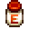
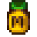
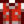
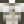

Harvey's Clinic
| Clinic | |
 | |
| Open Hours: | 9:00am to 3:00pm |
| Occupants: | |
Harvey's Clinic is located in the center of Pelican Town, next to Pierre's General Store. Harvey lives and works at the clinic. Maru works there on Tuesday and Thursday. Both of them often complain about the lack of patients.
Most villagers will visit the clinic for their annual checkup. George and Evelyn visit the clinic once per season.
Although you can enter the Clinic most days between 9am and 3pm, you cannot purchase medical supplies unless Maru or Harvey is behind the supplies counter.
Medical Supplies
Gifting medical supplies is possible, but both items are universally hated.
| Image | Name | Description | Effects | Purchase Price | Sell Price | Other Sources |
|---|---|---|---|---|---|---|
 |
Energy Tonic | Restores a lot of energy. |
| |||
 |
Muscle Remedy | When you've pushed your body too hard, drink this to remove 'Exhaustion'. |
|
|
Tailoring
Energy Tonic is used in the spool of the Sewing Machine to create the Letterman Jacket. 
Muscle Remedy is used in the spool of the Sewing Machine to create the dyeable Fake Muscles Shirt. 
Appointments
Note that the start times are when the villager leaves home to travel to the clinic. The end times are when the villager leaves the clinic.
Spring
|
Summer
|
Fall
|
Winter
|
Gallery
Harvey's apartment
Glitches
If you pass out from low health while on your horse, both you and the horse will be transported to Harvey's Clinic. Your horse will be stuck inside the Clinic until the morning when it is transported to its stable.
History
- 1.3.32: Red plus sign on front of building changed to blue. Interior red plus signs changed to green or desaturated.
- 1.4: Energy Tonic and Muscle Remedy can now be used in Tailoring.
- 1.6: Energy Tonic and Muscle Remedy are now obtainable during the Desert Festival.
- 1.6.4: Energy Tonic no longer restores health when consumed.
| Buildings | ||
|---|---|---|
| Merchants | Abandoned House • Adventurer's Guild • Blacksmith • Bookseller • Carpenter's Shop • Casino • Desert Trader • Fish Shop • Giant Stump • Harvey's Clinic • Ice Cream Stand • Island Trader • JojaMart • Marnie's Ranch • Oasis • Pierre's General Store • Qi's Walnut Room • The Stardrop Saloon • Traveling Cart • Volcano Dwarf • Wizard's Tower | |
| Houses | 1 River Road • 2 River Road • 1 Willow Lane • 2 Willow Lane • 24 Mountain Road • Elliott's Cabin • Farmhouse • Island Farmhouse • Leah's Cottage • Mayor's Manor • Tent • Trailer • Treehouse | |
| Farm Buildings | Farming | Barn • Cabin • Coop • Fish Pond • Greenhouse • Mill • Pet Bowl • Shed • Silo • Slime Hutch • Stable • Well |
| Special | Desert Obelisk • Earth Obelisk • Farm Obelisk • Gold Clock • Island Obelisk • Junimo Hut • Water Obelisk | |
| Other Buildings | Community Center • Dog Pen • Island Field Office • Joja Warehouse • Movie Theater • Museum • Spa • Witch's Hut | |